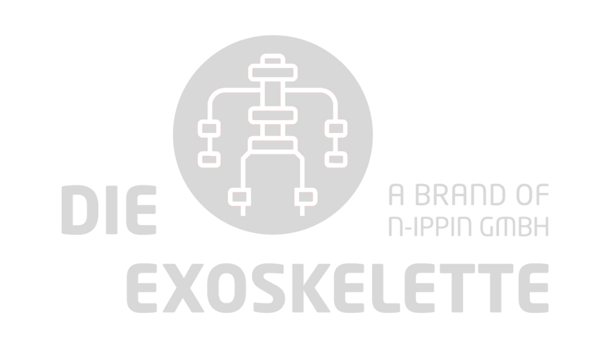

Industry · May 2025
Logistics and production during live operations.
The field test at the Teisnach plant provided concrete input for further development.
View field test
LU 20 · Active exoskeleton for logistics
LU 20 actively supports physically demanding logistics tasks while preserving the freedom of movement that matters at work.

Direct feedback from production and logistics shows how LU 20 performs across different working environments.
Industry · May 2025
The field test at the Teisnach plant provided concrete input for further development.
View field testProduction · July 2026
Experience from daily tasks fed directly into the final assessment of the trial.
View field testFurniture logistics · July 2026
Positive user feedback and on-site coverage for ARD’s business programme Plusminus.
View field testLU 20 benefits
LU 20 is designed for physically demanding logistics tasks. The system supports the back and arms; comparable production workflows can also be assessed.
Active support for two heavily used areas of the body in one system.

Developed for dynamic logistics workflows where people need to stay mobile.

Tested with employees at real logistics and industrial workplaces.

We assess whether LU 20 fits your logistics task, workplace and team during a demo and workplace evaluation.
Field Tests
Three partners, three real working environments: LU 20 is developed together with the people who lift, carry and move loads every day.
Industry & logistics
At the Teisnach plant, the EASE exoskeleton was tested under real-world conditions together with logistics and production employees. Their direct feedback provided concrete input for further development and confirmed the proof of concept.

Test phase completed
Over several weeks, employees tested the EASE exoskeleton during their daily tasks. Their experience fed into a joint closing review, providing a sound basis for assessing the practical value for SFB’s workflows.

Furniture logistics
At Spitzhüttl, LU 20 is being tested in live warehouse operations, where furniture is lifted, carried and moved every day. Initial employee feedback was very positive. An ARD crew accompanied the field test for the business programme Plusminus.

Frequently asked questions
From assistance performance and operating limits to batteries, maintenance and service: find the essential information about LU 20 at a glance.
Can’t find your question? Talk to our team.
5 questions
LU 20 provides total load relief of up to 20 kg, or up to 10 kg per arm. This means that assistance force reduces the load acting on the arms, shoulders and back. The actual weight of the object does not change.
Heavier objects can also be handled with assistance. However, the user must be permitted and able to handle the load safely without an exoskeleton. Company rules, risk assessments and statutory load limits continue to apply.
Active assistance means that the system uses a battery, sensors and motors. Via a cable system, the motors generate additional force that supports the body specifically when lifting, carrying and setting down loads. The strength and speed of assistance can be adjusted in stages using the control panel.
The system is designed for dynamic and varied tasks. In free mode, it follows the user’s movements so employees can move between assisted lifting tasks and carry out secondary activities. Safe use requires sufficient room to move and suitable workplace conditions.
After instruction and individual adjustment, the system can typically be put on in less than one minute. Before every use, the fit must be checked and adjusted to the individual user.
LU 20 weighs approximately five kilograms. The load is distributed across the forearms, shoulders, back and hips by the body-contact structures. Thanks to the backpack system developed together with Deuter, the weight is barely noticeable.
5 questions
LU 20 is intended in particular for repeated, dynamic lifting, carrying, setting down and positioning of loads between floor and shoulder height. Typical applications include:
LU 20 is designed for dry indoor spaces in commercial and industrial work environments. Its intended temperature range is −10 °C to +40 °C.
The system has no special protection against water or dust. Outdoor use, use in potentially explosive atmospheres or use in other particularly hazardous areas is not intended without a separate assessment and approval.
The system is intended for trained, adult professional users who are medically fit. Before first use, instruction and approval for the relevant workplace are required. Use at work is always voluntary.
Pregnant people and people with pacemakers, metal implants or comparable medical risks may use the system only after appropriate medical clearance. If there is any doubt about a user’s health, medical advice should be sought before use.
Before first use, users receive practical instruction. This covers correct donning and adjustment, operation, operating limits, important safety information and use at the intended workplace. The system may be used only after this instruction.
Supervisors, multipliers and those responsible for occupational safety and organisation can also be included. This does not replace the company risk assessment or any training the employer is legally required to provide.
No. LU 20 supports the body, but it does not replace a risk assessment, ergonomic workplace design, operating instructions or legally required training. It may be used only at workplaces where the task is permitted and can be carried out safely without an exoskeleton.
5 questions
Depending on use, the assistance level and the battery fitted, runtime is typically up to eight hours. Particularly demanding tasks or tasks with continuous motor assistance may reduce this. The replaceable battery allows the system to be prepared for the next shift in just a few steps. With scheduled battery changes, operation across all three shifts is possible.
Charging time depends on the capacity of the battery and the charger used. Because a discharged battery can be swapped directly for a charged one, ongoing operation does not need to stop while a battery is charging.
Unless otherwise agreed, the battery and charger must generally be purchased separately. LU 20 uses approved batteries from the Makita XGT 40V max range and a compatible charger.
The body-contact textile components are replaceable and machine washable. Each regular user should have their own textile set. When the user changes, the textiles are replaced and cleaned in line with the care instructions. This supports hygienic use in multi-shift operations.
The mechanical and electronic components must not be cleaned in a washing machine. Follow the cleaning instructions in the user manual for these components.
The regular maintenance interval depends on how intensively the exoskeleton is used. LU 20 will notify you when maintenance is required. This includes checks of the mechanical and electronic components, safety-relevant functions, connections and wear parts. Required maintenance and approved safety-relevant updates are completed and documented in a maintenance report.
The unit may be opened, repaired or technically modified only by EASE or an approved service provider.
5 questions
We support you during rollout, correct adjustment and safe use of the system. Depending on the agreement, support may include:
A dedicated contact is available for technical questions and faults.
The User Experience Guarantee is a voluntary satisfaction guarantee covering the first three months after delivery. It applies if the system has been used seriously and integrated organisationally into operations, but a significant and sustained acceptance issue nevertheless remains among the intended employees.
The issue must be reported early, and EASE must be given the opportunity to analyse the causes and make at least two optimisation attempts. These may include additional instruction, adjusted settings, training or technical optimisation. If the material acceptance issue remains, the affected systems may be returned under the contractually agreed conditions. This is a special contractual right of return, not a technical performance guarantee or a statutory right of withdrawal.
For the duration of regular maintenance, a functionally equivalent replacement unit is provided under the relevant service agreement. It need not be brand new or identical to the original unit, but it provides the same contractually agreed functionality.
An outage should be reported without delay through the agreed service channel. The report should include the serial number, a description of the fault, any available photos, videos or error messages, and the delivery address.
Once a complete fault report has been received, a functionally equivalent replacement unit is provided under the service agreement. Provision is planned within five working days for delivery addresses in Germany and within seven working days for addresses in other EU member states.
Yes. Demonstrations and practical product trials can be arranged. The system is presented in the intended work environment or using representative tasks, allowing its function, fit, comfort and assistance effect to be assessed under realistic conditions.
Request a demo
A few details help us prepare the demo for your workplace and team.
We review the task, movement pattern and operating conditions.
Your team experiences LU 20 in the relevant logistics process.
You receive a recommendation for a pilot and the next step.
Request received
We will contact you to coordinate the task assessment, workplace test and the right next step.
EASE sales network
Our certified resellers provide professional advice, product testing and purchasing support.
Certified reseller
ProHandling provides consulting, product testing and sales for the EASE LU 20 in ergonomic carrying applications across Germany.
Visit reseller
Certified reseller
N-IPPIN GmbH offers consulting, product testing and sales for exoskeletons in Germany.
Visit reseller
The Coordinator
Chief Executive Officer
Business Development, Investor Relations and Strategy

The Enthusiast
Chief Commercial Officer
Customer Relations and External Operations
Expert in production ergonomics & exoskeletons

The Doer
Chief Technology Officer & Chief Operations Officer
Tech and Supply Chain Management

The Funding Strategist
Chief Financial Officer
Fundraising, Planning and Controlling

Sales

Sales

Engineering
Engineering

Engineering

Founder's Associate (CEO)

Design

Sales and Marketing

Founder's Associate (CCO)
Engineering
Careers at EASE